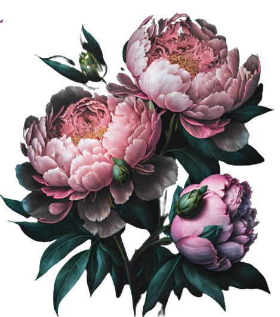

A woman's mood is influenced by shades. A bouquet of rainbow flowers can awaken new emotions. For example, red enhances energy. yellow acts gently, disposes to reflection, pink is the color of dreamers. sensual natures, our bouquets give a smile and unforgettable emotions. Visit our catalog and see for yourself
